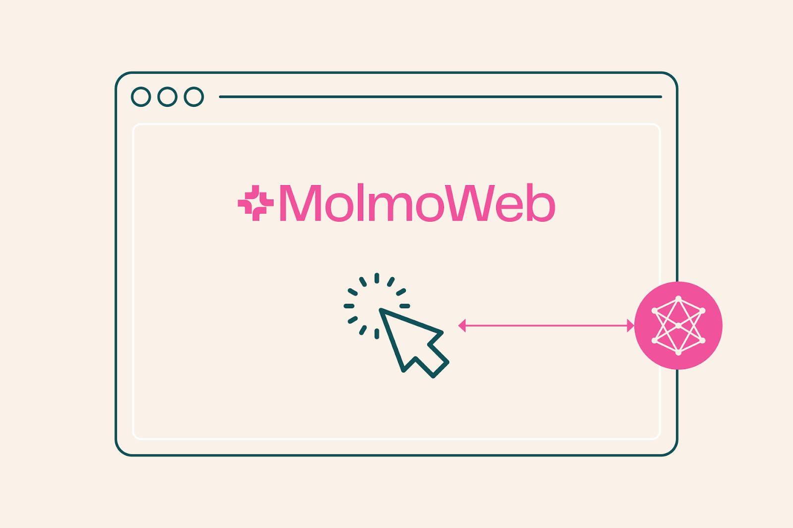
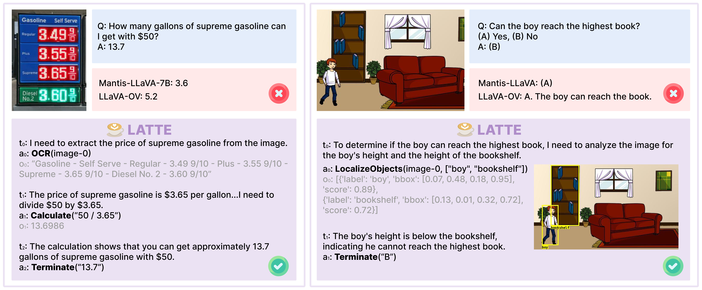
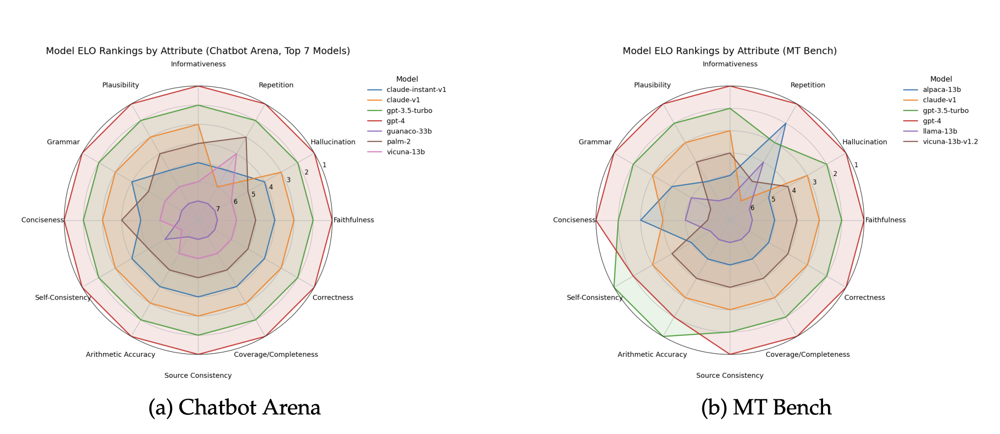
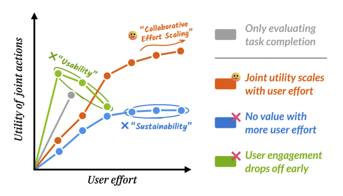

Selected works
* equal contribution · † project lead · ♥ core contributor · full list on Google Scholar
Open multimodal models
Models and data that let agents see, point, and track in images, videos, and figures.
-
Molmo2: Open Weights and Data for Vision-Language Models with Video Understanding and Grounding
Christopher Clark*♥, Jieyu Zhang*♥, Zixian Ma*♥, Jae Sung Park*♥, Mohammadreza Salehi♥, Rohun Tripathi♥, Sangho Lee♥, Jason Ren, Chris Dongjoo Kim, Yinuo Yang, Vincent Shao, Yue Yang, Weikai Huang, Ziqi Gao, Taira Anderson, Jianrui Zhang, Jitesh Jain, George Stoica, Winson Han, Ali Farhadi, Ranjay Krishna
OralBest Paper Award CandidateCVPR 2026
[Blog] [PDF] [Report] [Models] [Data] [Playground] 740+4.7M+
News: VentureBeat, GeekWire, SiliconANGLE, BigDATAwire, The AI Economy
Multimodal agents
Agents that plan, use tools, and act on the web.
-

MolmoWeb: Open Visual Web Agent and Open Data for the Open Web
Tanmay Gupta*♥, Piper Wolters*♥, Zixian Ma*♥, Peter Sushko*♥, Rock Yuren Pang♥, Diego Llanes♥, Yue Yang♥, Taira Anderson, Boyuan Zheng, Zhongzheng Ren, Harsh Trivedi, Taylor Blanton, Caleb Ouellette, Winson Han, Ali Farhadi, Ranjay Krishna
ECCV 2026
[Blog] [Report] [Models] [Data] [Demo] 590+84K+
News: VentureBeat, GeekWire, The Decoder, The New Stack, AI Business, This Week in NLP, GIGAZINE · Ai2: X, newsletter
-

LATTE: Learning to Think with Vision Specialists
Zixian Ma, Jianguo Zhang, Zhiwei Liu, Jieyu Zhang, Juntao Tan, Manli Shu, Juan Carlos Niebles, Shelby Heinecke, Huan Wang, Caiming Xiong, Ranjay Krishna, Silvio Savarese
Oral#1 Most-Read Salesforce Research Paper of 2025EMNLP 2025 | SynData4CV workshop @ CVPR 2025
News: TelecomTalk, CO/AI · Salesforce AI Research: blog, story
Evaluating multimodal models
Benchmarks that reveal what multimodal models can and can't do.

Human-AI interaction
How people evaluate, design, and collaborate with AI.
-

Rethinking Human Preference Evaluation of LLM Rationales
Ziang Li*, Manasi Ganti*, Zixian Ma*, Helena Vasconcelos, Qijia He, Ranjay Krishna
Best Paper Honorable MentionXLLM-Reason-Plan workshop @ COLM 2025
-

Completion ≠ Collaboration: Scaling Collaborative Effort with Agents
Shannon Zejiang Shen, Valerie Chen, Ken Gu, Alexis Ross, Zixian Ma, Alex Gu, Chenglei Si, Jillian Ross, Jocelyn J Shen, Wayne Chi, Andi Peng, Ameet Talwalkar, Tongshuang Wu, David Sontag
Best Paper AwardResponsibleFM workshop @ NeurIPS 2025